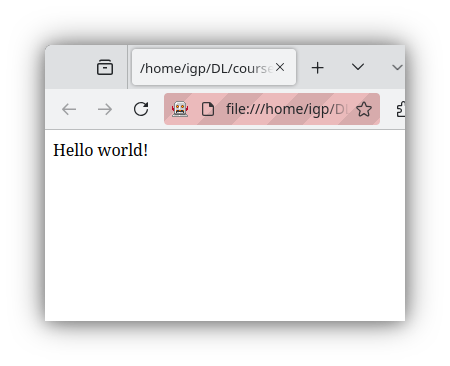
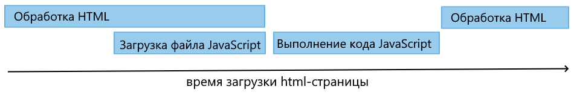
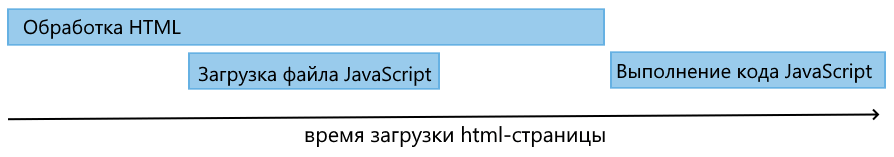

Основы JavaScript
© IGP, январь 2025 г.
Возможно два варианта выполнения программ написанных на JavaScript:
- Серверный (backend) — выполнение в среде Node.js
- Клиентский (frontend) — выполнение в среде web-обозревателя
Клиентский вариант
Программный модуль встраивается в HTML страницу. У программы имеется доступ к интерактивным возможностям обезревателя.
<html>
<script>
document.write("Hello world!");
</script>
</html>Клиентский вариант

Клиентский вариант
Когда обозреватель получает веб-страницу с кодом html и javascript, то он ее интерпретирует. Результат интерпретации в виде различных элементов — кнопок, полей ввода, текстовых блоков и т.д., мы видим перед собой в обозревателе. Интерпретация веб-страницы происходит последовательно сверху вниз.
Основы синтаксиса
Код javascript состоит из инструкций. Каждая инструкция представляет некоторое действие. И для отделения инструкций друг от друга в javascript после инструкции ставится точка с запятой.
Современные браузеры вполне могут различать отдельные инструкции, если они просто располагаются на отдельных строках без точки запятой.
Блоки кода
Отдельные инструкции можно можно объединять в блоки кода, которые представляют некоторый код, заключенные между фигурными скобками { блок кода }.
Комментарии
В коде javascript могут использоваться комментарии. Комментарии не обрабатываются интерпретатором javascript и никак не учитываются в работе программы.
Комментарии предназначены для ориентации по коду, чтобы указать, что делает тот или иной код.
Однострочный комментарий
// Это комментарий на одной строке
E = m * c**2; // очень важная формули физики
Многострочный комментарий
/*
Основа релятивистской физики
Формула раскрывает взаимозависимость энергии и массы пространства-материи-времени.
*/
E = m * c**2;
Подключение внешнего файла JavaScript
Хорошим тоном является разделение HTML страницы и программы на JavaScript по различным файлам.
HTML. Файл index.html
<html>
<script src="index.js"></script>
</html>
JavaScript. Файл index.js
document.write("Привет мир!!!");
Асинхронная загрузка и отложенное выполнение
Нередко веб-страницы имеют сложную структуру, какие-то блоки на html-странице, где подключаются файлы javascript, формируются динамически, что может усложнять управление файлами javascript. И для управления загрузкой файла с кодом JavaScript браузер предоставляет два атрибута: async и defer.

async — обработка HTML-кода не будет приостановлена, когда браузер встретит элемент <script>. Файл JavaScript загружается асинхронно.

<script async src="index.js"></script>defer — гарантирует, что обработка HTML-кода не будет приостановлена. Исходный код JavaScript выполняется только после полной обработки HTML-кода.

<script defer src="index.js"></script>Переменные и константы
Для хранения данных в программе используются переменные и константы.
Переменные предназначены для хранения каких-нибудь временных данных или таких данных, которые в процессе работы могут менять свое значение.
Константы предназначены для хранения неизменных данных, значение которых должно оставаться постоянным в течение всей программы.
Объявление переменных
const rights=15;
var $name;
let user1="Иванопуло";
- Создайте программу в которой будет объявлены константа a и перенная b c
начальными значениями 5 и 10.
Выведите их сумму.
Типы переменных
В JavaScript имеется восемь типов данных:
- Примитивные типы:
String: представляет строку Number: представляет числовое значение BigInt: предназначен для представления очень больших целых чисел Boolean: представляет логическое значение true или false Symbol: представляет уникальное значение, которое часто применяется для обращения к свойствам сложных объектов Undefined: представляет одно специальное значение - undefined и указывает, что значение не установлено Null: представляет одно специальное значение - null и указывает на отсутствие значения - Сложный тип
Object: представляет комплексный объект
Арифметические операции
- сложение
- вычитание
- умножение
- деление
- остаток от деления
- возведение в степень
- инкремент
- декремент